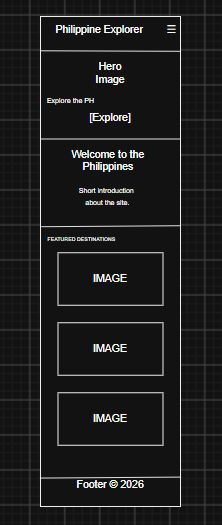
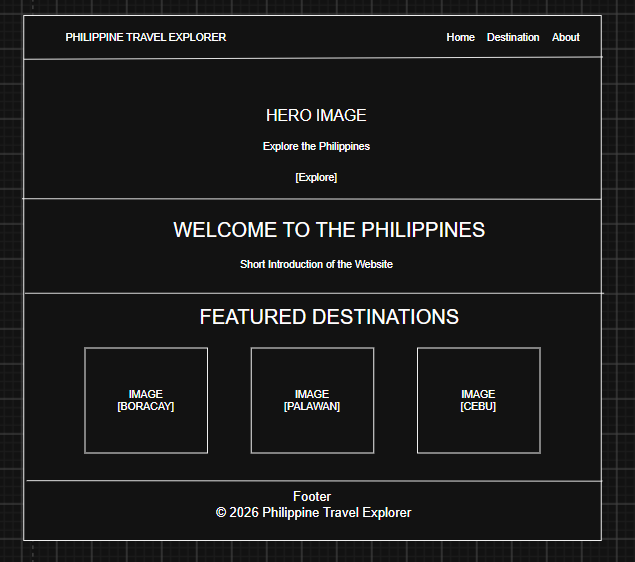

Site Name
Philippine Travel Explorer
The name was selected because the website focuses on helping people discover travel destinations, attractions, and experiences throughout the Philippines. It is simple, descriptive, and easy to understand.
Site Purpose
The purpose of Philippine Travel Explorer is to provide travelers with useful information about destinations in the Philippines. The website will feature popular places to visit, descriptions of destinations, activities, travel information, and other helpful details to help visitors plan their trips.
Scenarios
- What are some popular places to visit in the Philippines?
- What activities can I do at a particular destination?
- Where can I find information about different Philippine destinations?
- Which destination would be a good choice for my next trip?
Color Scheme
Deep Blue
#0F4C81
Used for the header, navigation, main headings, and other important elements. Blue represents the ocean and gives the website a travel-oriented appearance.
Warm Yellow
#F4C542
Used for buttons, accents, highlights, and important interactive elements. Yellow represents sunshine and adds contrast to the blue.
Light Background
#F8FAFC
Used as the main page background to keep the content clean and easy to read.
Typography
Poppins
Poppins will be used for headings, titles, navigation, and other prominent text. It provides a modern and friendly appearance.
Roboto
Roboto will be used for paragraphs, descriptions, and general body text because it is clean and easy to read.
Wireframe
The wireframes show the basic structure and layout of the Philippine Travel Explorer home page for both small and large screens.
Small Viewport

Large Viewport
